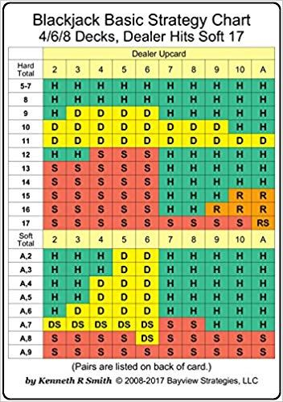
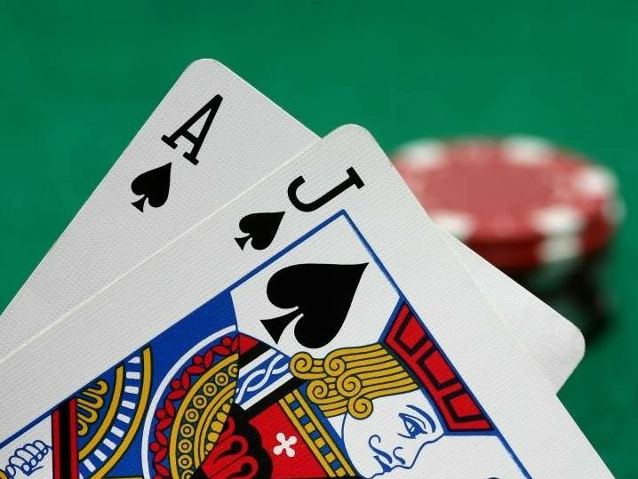

<template>
  <div class="MainContainer">
    <div class="TitleImg center">
      
    </div>
    <div class="single-wide">
      <h1>BLACKJACK STRATEGIES </h1>
      
      <p>The game of blackjack is one of the most popular casino betting games. What is it exactly that makes this game so popular worldwide?  One of the main reasons that so many people love blackjack is because when played with proper basic strategy, Blackjack has a house advantage of less than one percent. This means that if you utilize a few basic tricks and strategies you can partake in a highly profitable gambling experience-have fun and walk away at the end of your game with more money than you came with.  Unlike other casino games such as slots and Roulette, which are based purely on luck, in the game of blackjack a player's chances of winning depend largely on the decisions that the player make. Taking the dealer's face-up card into consideration, a player can decide whether to take more cards, stay, split, or double down. This makes the game attractive to gamblers looking to make a profit.  Blackjack is exciting for players because of the social aspect. Players crowd around live blackjack tables to play together and root each other on. With great odds and a variety of gaming options, it's no surprise that blackjack is such a popular game to play.</p>
      <h3>PROGRESSIVE BETTING STRATEGY FOR BLACKJACK  </h3>
      <div class="flex">
        
        <p>Blackjack is a fun game to play and has a very low house advantage when played using the correct basic strategy.  We have provided you with the basic strategy charts (see below).  We also like to implement a progressive betting strategy while playing Blackjack.  The house still has a slight advantage over the player, but we find that by using this progressive strategy, you can increase your enjoyment of the game and potentially have a large winning session.  Using this system does does not give us an advantage over the casino, but it does get us to increase our wagers on a winning streak and potentially allow us to have a large winning session while only increasing our wagers with our winnings.  We like to play this progressive strategy because it makes the game more fun and exciting and really, isn’t that why we gamble.  If you normally play $5 a hand or $15 a hand, this strategy can increase your excitement and possibly help you have a sizable winning session at the casino.  </p>
      </div>
      <p>If you are normally a $5 a hand BJ player, consider using this strategy.  Buy in for $60 and ask for $10 in ones (white chips).  Start at $6 a hand and always go back to the $6 starting hand after any loss.  If you win the hand, increase to $10, if you win then increase to $16, then $25, $40, $60, $100.   Once you get to $100 a hand, wow you are doing great.  That’s 7 hands in a row!!! Fantastic.  If you had simply bet those 7 hands at your normal $5 a hand you would have won $35.  But with this progressive strategy you are now up $159.  It is difficult to win 7 hands in a row, but you are only increasing your wagers after a win, so all the increased wagers are your winnings.  if you win two hands in a row, you will have a $16 wager, but your original $6 bet has been returned to your starting pile of chips.  If you lose that hand, you have simply lost your profit, and start again at $6.  Hopefully at some point you get that 7 hand winning streak and really have a great winning session.  Now, if you are not comfortable wagering say more than $25 a hand, well that is fine, just build it up to $25 and wager it until you lose.  You may be surprised at how much more exciting the game becomes when you have a tower of chips.  It should be noted that after winning the $100 hand, some continue to bet $100 a hand until a loss occurs, others walk away with their pile of winnings.  We suggest taking a break after getting up to the max bet level.  You have accomplished your goal.  The system worked.  Take a break from the game and think about how lucky you were to subscribe to the VDF.  The same strategy can be used starting with $15 a hand.  You always go back to your original starting amount after any loss.  This way, you are only increasing your wagers when it is with your winnings.  We think you will find the game much more exciting, by playing this progressive system.  Here is a chart of the betting progressive system for both starting amounts. </p>
      <h3>Progressive Strategy betting chart utilizing the Basic Strategy Card </h3>
      
      <p>$6, 10,16, 25, 40, 60,100
        $15 table starting wager
        $15, 25, 40, 60, 100, 140, 200
        Remember always return to the starting amount after any loss. </p>
      <p> If you push(tie) a hand, remain at that same betting amount for the next hand. </p>
      <h3>EASY CARD COUNTING  </h3>
      <p>If you’re interested in learning card counting but aren’t sure you want to learn a complex system right away, the Ace-Five Count might be just right for you. A perfect stratagy for newer to casual players that simply want to futher minimize the house edge and have the possibility of ending up with a slight advantage over the casino. Not the strategies players who play blackjack for a living or if your trying to maximize the player advantage over the casino. It also has the advantage of being very unlikely to out you as a card counter, since you won’t be playing at a huge advantage, and you won’t be adjusting your play very much. The Ace-Five Count is self explanatory because it only counts aces and fives. This makes the counting process for the player much easier and simplified. With the Ave-Five strategy players don't have to track the majority of the cards in the deck, just the Ace's and five's. This typically works because aces are the best card in the deck for the player, while fives are the worst. Aces mean that the player is more likely to make a 3-2 paying blackjack, while fives turn the normally bad dealer hands (12-16) into hands the dealer can stay on. Because there are an equal number of aces and fives in the deck or shoe to begin, no weighting or other adjustments are necessary. The player only needs to add one to the count (+1) each time a five comes out of the shoe, and subtract one (-1) each time an ace comes out of the shoe. When the count is positive, the remaining shoe is generally good for the player, while a negative count shoe is bad for the player.  </p>
      <p>Play: Sit down at the start of the shoe, start your count at 0, and make a small bet, start with the table’s minimum bet. If the count grows to +2, double your bet. If the count gets to +3 or higher, double your bet again.  The amount of times you continue doubling after this point is completely up to the player. We usually stop after 2nd round. There are two forces working against you when continually doubling your bets when your count is +3 or greater. You are putting a lot of money at risk with only a small edge, meaning that your variance will be much, much greater. Large spreads can also increase the chances of getting noticed for card counting.  By using the Ace Five strategy you will likely hold a small edge of less the 1% against the casino. That’s usually enough advatage for you to come out ahead of the casino over the long haul. Its make you feel like you’re playing a game where you have some extra control and a slight advantage. It’s simply a great way to get started with card counting for beginner to casual play.</p>
      
      <h5>“Another mistaken gambling notion connected with the law of nunbers is the idea that an event is more or less likely to occur because it has or has not happened recently. The idea that the odds of an event with a fixed probability increase or decrease depending on recent occurrences of the event is called the gambler's fallacy. For example, if Kerrich landed, say, 44 heads in the first 100 tosses, the coin would not develop a bias towards the tails in order to catch up! That's what is at the root of such ideas as "her luck has run out" and "He is due." That does not happen. For what it's worth, a good streak doesn't jinx you, and a bad one, unfortunately , does not mean better luck is in store.” </h4>
      <h6>― Leonard Mlodinow, The Drunkard's Walk: How Randomness Rules Our Lives I’m We </h5>
      <h3>Blackjack No No's </h3>
      <p>Although Blackjack is one of the best games to play in the casino there are several variations where the casino advantage is much greater. Almost all of the bonus bets in Blackjack have a horrible house advantage.  These bets generally require an additional side bet next to your original bet in the betting circle.  VDF always recommends avoiding any of these side bets, as the house advantage is far too large. </p>
    </div>
  </div>
</template>
